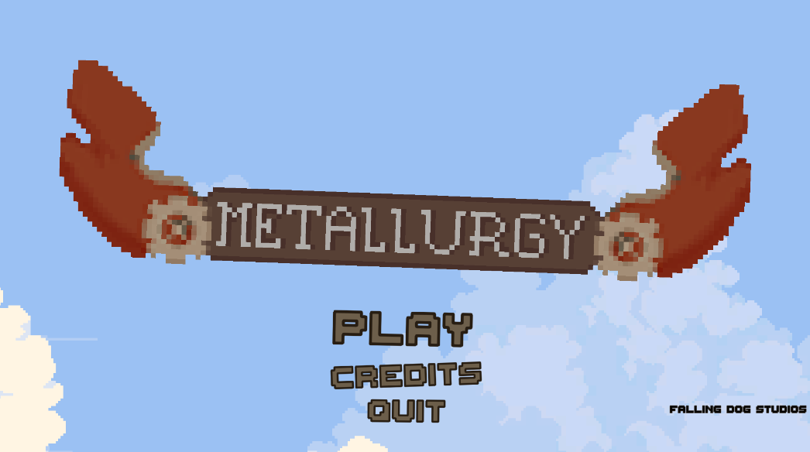
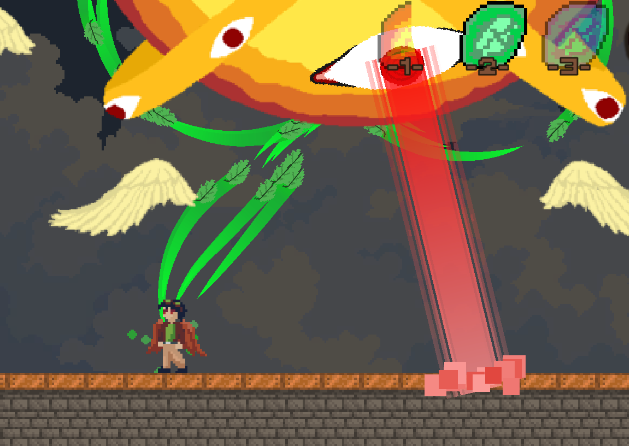

I am a student at the University of michigan-Ann Arbor and a game developer currently working with WolverineSoft Studios.
About Me
I am a Senior in Computer Science at the University of Michigan School of Engineering, with the prospective graduation of December 2023. I specialize in game development and audio engineering using
software such as Unity, Wwise, Audacity, FLStudio, and AbletonLive11. I am also an active member of WolverineSoft Studio.
This Legend of Zelda NES remake was made with Unity and C#. Along with all features of the original temple replicated, this game
introduces the mechanic of dashing, inspired by Hyper Light Drifter. In this project, I primarily specialized in weapons, UI, and level interaction such
as movable blocks, room transitions, and the old man room.
Shroom Doom was created with Unity and C#. Shroom Doom is a puzzle platformer where the player plays as a small mushroom guy who
has the ability to infect NPC characters around them and control their movements.
This game was completely created by myself,
including most character art.
Over the course of 3 months, I worked in a 19 person studio to create the prototype of what would eventually go on to become Subtension. I primarily
focused on audio creation and implementation using Wwise and Unity.
Metallurgy was created with Unity and C# on a team of 5 developers throughout a 6 week process.
Metallurgy is a rogue-like action platformer where a player must reach the top of a tower using a pair of upgradable wings.
Among other systems, Metallurgy features procedural world generation, an upgrade tree system, and a unique weather mechanic to augment movement.
Throughout the process I primarily worked on art and implementation, various dialogue and cutscenes, and the upgrade system.


CSE Simulator
This CSE Simulator was created with Unreal Engine 5 on the VR platform throughout a 3 week process.
It is a recreation of the CAEN lab on the first floor of the Bob and Betty Beyster building on UofM-Ann Arbor's North Campus.
Within the lab, players can interact with various objects, including functional lightswitches, firealarms, whiteboards, etc.
This project also implements the custom feature of a "take a break" button which transports the player to a tropicaal vacation and back when pressed.
Throughout the process, I worked a lot with blueprint class inheritance, events, and materials.